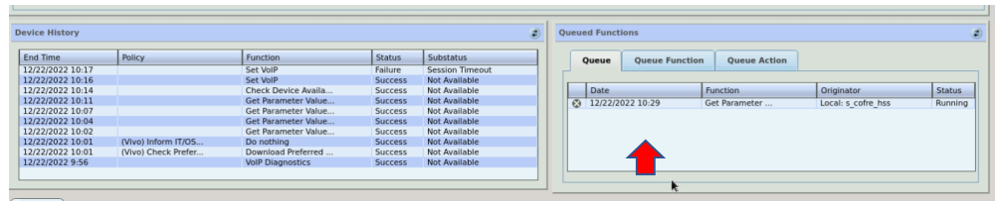

Como consultar a LAN HOST - HDM
Assim que abrir o HDM, clicar em Manage Devices

Clicar em Devices, em Search Profile selecionar a opção Find Devices by Serial Number, após colar o serial number do HGU e clicar em Manage.
Clicar em LANDEVICE, após em ADD e SAVE.
Clicar em Queue e de novo em Queue
Aguardar dar sucesso no comando
Após ele dar sucesso, irá para essa tela informando o status de SUCESS e clicar em Device Data
Selecionar a opção SHOW ALL PARAMETERS e clicar em refresh, aguarde um pouquinho
Clicar em LANDevice, clicar no sinal de + ao lado do número 1, após clicar no sinal de + no Hosts e em seguida clicar no número (caso apareça vários números como no exemplo acima, isso significa a quantidade de equipamentos que estão conectados) , assim que clicar neles ao lado irá aparecer as informações da LAN.